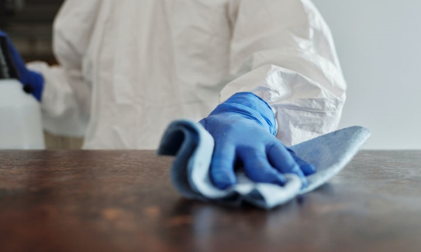

新聞中心 > 常用消毒殺菌產品介紹
防疫必備的次氯酸水、酒精、二氧化氯、漂白水，正確用法及功效一次看懂

次氯酸水不可用在皮膚，適合食器清潔
使用時機
居家環境和食器清潔。
使用濃度
環境清潔：100～300ppm；食器消毒：20～90ppm
缺點
- 次氯酸水對皮膚有刺激性。
- 次氯酸水物質不穩定，不耐存放。
- 遇到陽光照射，次氯酸水會氧化還原，失去殺菌效果。
注意事項
- 應在通風良好的環境下使用，擦拭後停留數分鐘再以清水擦拭。
- 若是清潔食器，縱使濃度較低，使用次氯酸水後也要用清水洗淨後再使用。
- 次氯酸水不可用於清潔皮膚。
- 避免使用於金屬上。
漂白水適合環境消毒，24小時內要用完
使用時機
居家環境清潔，不可用於清潔食器。
使用濃度
市面上的氯系漂白水大濃度都為5~6%，消毒環境：稀釋100倍
缺點
- 漂白水遇到陽光照射會氧化還原，失去殺菌果。
- 漂白水會對皮膚、黏膜、呼吸道產生刺激。
注意事項
- 漂白水不可與其他清潔劑混用，以免產生有毒氣體或降低殺菌效果。
- 經過稀釋的漂白水，存放太久殺菌效果會降低，建議24小時內使用完畢。
- 應在通風良好的環境下使用，擦拭後停留數分鐘再以清水擦拭。
- 避免使用在金屬、羊毛、尼龍、絲綢類的材質上。
酒精消毒75％最好，擦拭效果優於直接噴灑
使用時機
居家環境、食器清潔、人體皮膚。
使用濃度
70～75％
缺點
酒精不是對所有病毒都有效，對於沒有外套膜的病毒，像是腸病毒、輪狀病毒、諾羅病毒，酒精消毒的效果不佳
注意事項
高濃度95％的酒精，會將細菌表面的蛋白質迅速凝固，對於一些細菌來說，它的內部仍有活性，所以殺了等於沒殺，應先將酒精噴在抹布、紙巾上，再用擦拭的方式消毒，效果會較好。 用於食器時，建議先噴在衛生紙上擦拭，帶酒精揮發後用水沖洗後再使用，酒精不要大規模噴灑，以免釀成火警。
二氧化氯只適合用在環境、器具消毒
使用時機
居家環境、器具清潔。
使用濃度
擦拭消毒器具50～150ppm即可；浸泡器具消毒10～50ppm即可，二氧化氯消毒後須戴手戴再用清水沖洗。
缺點
二氧化氯要盡速用完，不要囤積，擺放久殺菌力會降低
注意事項
- 二氧化氯為合法的食品用洗潔劑，僅可用於食品消毒，不能食用。
- 二氧化氯不建議在室內不斷噴灑，會造成鼻子、喉嚨及肺部的刺激、不適。
- 需存放在陰涼、沒有光照的地方。
次氯酸水和漂白水的差別？
次氯酸水和俗成漂白水的次氯酸鈉，兩者成分其實很接近，漂白水是指次氯酸鈉水溶液（sodium hypochlorite），一般常做為環境消毒；而次氯酸水（hypochlorous acid）化學結構缺少鈉正離子，所以不是漂白水。 因為次氯酸水和漂白水的成分都含有次氯酸陰離子，具有強烈的氧化能力，功效上皆會使細菌、病毒失去活性，因此有殺菌消毒的作用。